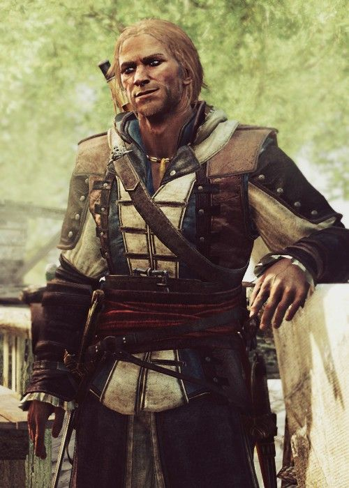

THE PIRATE RACE
Yer mission briefing

Team Kenway
A Welsh-born privateer turned pirate who sailed the Caribbean during the golden age of piracy in the early 18th century. Driven by ambition and a thirst for fortune, he became one of the most daring captains to fly the black flag.
Yer starting station
Ile Sainte-Marie
Car Park
Between manned stations, hunt down all 10 hidden QR codes around the church. Scan each one, unscramble the word, and submit via the form as proof ye were there!
QR1 Clue:"Even pirates need grog and grub — seek where the crew feeds"
QR1 Clue:"Even pirates need grog and grub — seek where the crew feeds"